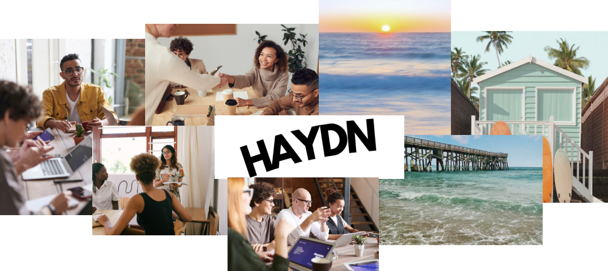
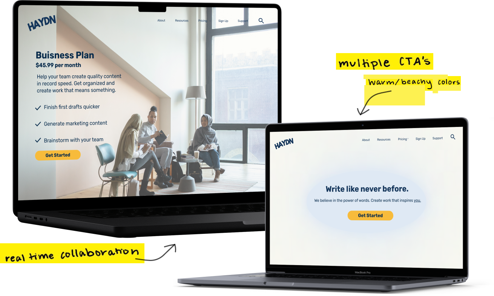
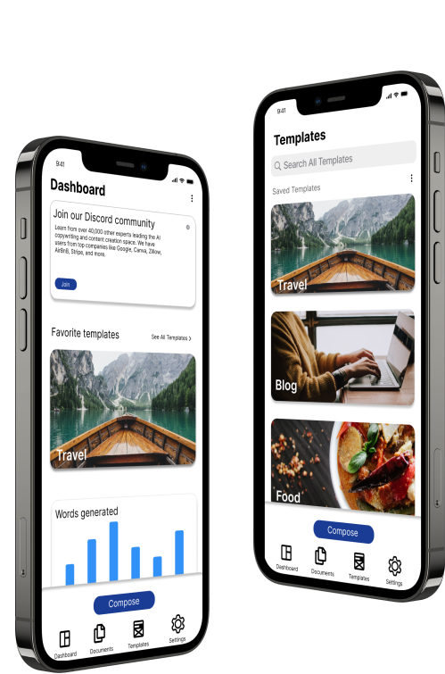

User Research/ UX Design/ UI Design

Haydn is an AI content generator that helps users craft authentic and persuasive content quickly and effectively. My client tasked me with developing a Marketing Landing Page for mobile, tablet and desktop, as well as a Hi-Fi prototype consisting of the main features on the mobile app. I was given pre-existing assets from the client, which included a lo-fi mockup for the mobile app, marketing copy, and a style guide.
3 weeks
Tools UsedFigma, Optimal Workshop, Pintrest, Notion
PlatformsMobile, Tablet, Desktop
Competetive Analysis
Card Sort
Sitemap
Week 1
Rapid Sketching
Mood Board
Mid-Fi Prototype
Week 2
Hi-Fi Marketing Landing Page
Hi-Fi Mobile Prototype
Presentation
Week 3
The primary concern surrounding Haydn is that it’s a new product . I kept this thought in my mind as I began to do research for the marketing landing page. It was important for me to understand the client’s vision for their product, in order to keep with the desired tone and branding elements right from the start.
I began my research by doing a quick competitive analysis. I looked at three other competitors Frase, Jasper and zyro.
The research focused on these 3 things:Each competitor has minimal, easy to understand top navigations featuring around 4-5 items. Each competitor has prominently displayed call-to-action buttons that are immediately visible when entering their website. All of the competitors have modern, sleek, minimalistic designs that align with current UI trends.
Taking the insights gathered from the competitive analysis as well as the knowledge of my clients needs, I began drafting a sitemap. I used the new insights of potential information hierarchy as a starting point for conducting additional research.
I received responses from five users with diverse backgrounds, including an AI knowledgeable full-stack engineer, three AI-informed full-time students, and one AI-unfamiliar teacher. Gathering insights from experienced AI users and beginners was crucial for user-friendly designs. By observing three survey participants, I gained valuable insights into their thought processes. A key challenge was differentiating appropriate content placement between the about page and the resources page, highlighting the need for clearer category differentiation.
After receiving input from my project manager and analyzing the feedback obtained from my closed card sort, I finalized my sitemap.
Once the sitemap was finalized, I began brainstorming ideas for Haydn's marketing page. While keeping in mind the minimalistic design approaches adopted by Haydn's competitors, I also aimed to maintain the brand's established tone, as outlined by the client. Haydn's brand identity exudes a warm, beachy, and somewhat formal atmosphere. The client expressed their preference for avoiding a business-like or artificial feel in the branding. Instead, they emphasized the importance of creating a website that feels as human-centered as possible.
I hopped onto Pinterest and began ideating around color choices and imagery.
The objective was to convey a welcoming and playful atmosphere through the colors and imagery, all while maintaining a simple and minimalistic layout. Utilizing this moodboard and incorporating the preexisting assets provided by the client, I completed the marketing landing page.
I applied the same concepts used for the marketing page to the mobile app. The goal for the design was to mimic the minimalism of the marketing designs while retaining the brand's sense of warmth. I achieved this by using the brand colors as playful accents.
Taking the insights gathered from the competitive analysis as well as the knowledge of my clients needs, I began drafting a sitemap. I used the new insights of potential information hierarchy as a starting point for conducting additional research.
With that said, here are a few things I learned through the process:1. Scheduling is key!
Each step of the double-diamond method builds upon each other. Scheduling your time out in a thoughtful manner is key to ensure enough time is taken to complete each step to the highest quality possible.
2. Research Research Research…
Research is the foundation of all design decisions. It is essential to approach research with objectivity, free from preconceived notions and biases. When designing, don't forget to look back and ask yourself if the choices your making align with the research, or if any additional research is necessary to support the design choices made.